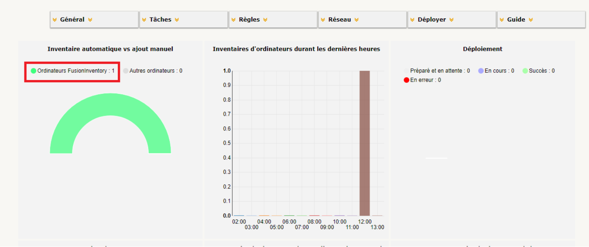
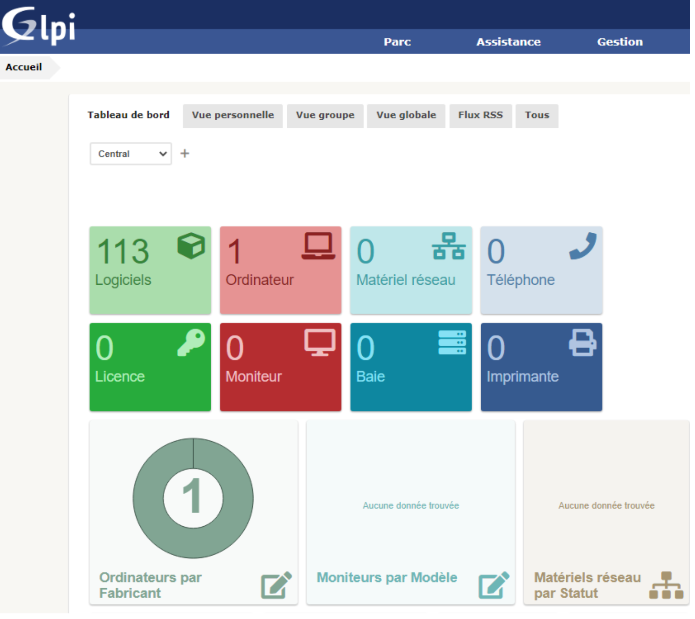

GLPI
GLPI est un système open source de gestion de parc informatique, de suivi des incidents et de centre de services
Compétences : Linux, Machine Virtuelle.-
Gérer le patrimoine informatique
Les missions
- Installer et à procéder à une première configuration de GLPI (sur machine virtuelle)
- Vérifier la bonne remontée des éléments d’interconnexion via le plugin FusionInventory (sur machines virtuelles)
Gérer le patrimoine informatique
Installation de GLPI sur VM
Tout d'abord, j'ai du préparer la machine virtuelle en installant Apache2, MariaDB et PHP, ensuite j'ai créer une base de données pour GLPI, j'ai télécharger GLPI via Github Puis j'ai installé le logiciel sur la VM.


Installation du plugin FusionInventory
Une fois GLPI installer, j'ai pu installer le plugin FusionInventory qui permet de remonter les informations matériels et logiciels sur GLPI.J'ai donc télécharger le plugin via Github et je l'ai installé sur GLPI, il suffit de le mettre dans le dossier plugins et de l'activer sur glpi.

Installation de FusionInventory Agent
J'ai installer FusionInventory Agent sur une VM windows afin de pouvoir remonter les informations de la machine sur GLPI.J'ai donc télécharger l'agent via Github


Le poste remonte bien sur le serveur GLPI

